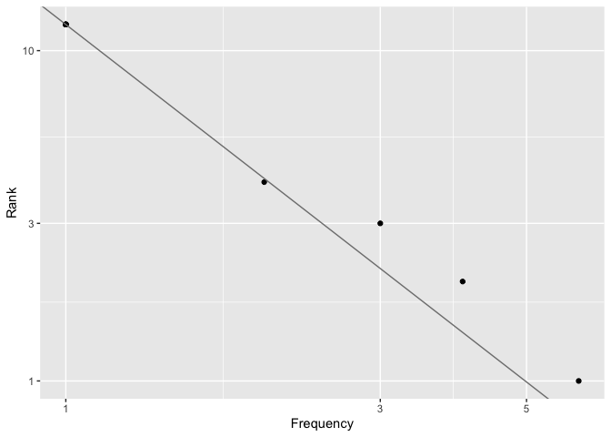

The zipfs pacakge contains functions to help fit Zipf’s Law to book texts from the Gutenberg project.
This package isn’t on CRAN, but you can install it from GitHub with:
# install.packages("remotes")
remotes::install_github("merely-useful/zipfs")
library(zipfs)
text <- c("Star light, star bright,
First star I see tonight;
I wish I may, I wish I might,
Have the wish I wish tonight.")
(word_freq <- count_words(text))
#> # A tibble: 12 x 2
#> word n
#> <chr> <dbl>
#> 1 i 6
#> 2 wish 4
#> 3 star 3
#> 4 tonight 2
#> 5 bright 1
#> 6 first 1
#> 7 have 1
#> 8 light 1
#> 9 may 1
#> 10 might 1
#> 11 see 1
#> 12 the 1
plot_rank(word_freq$n, add_fit = TRUE)
fit_zipfs(word_freq$n)
#> [1] 0.6458106This wouldn’t be in the pacakge README, but trying to keep it around in case it is useful.
An attempt to keep track of the R code run on the Console in the act of creating the package.
use_data_raw("dracula")
# Edit data-raw/dracula.R
# Source data-raw/dracula.R
devtools::load_all(".")
dracula # Check data available
use_r("dracula")
# Add data docs to R/dracula.R
devtools::document(".")
?dracula # Check docs
use_r("book-meta")
# Edit R/book-meta.R to add functions
use_package("tibble")
use_package("stringr")
use_pipe()
devtools::load_all(".")
extract_element("Author: Bram Stoker", "Author")
book_meta(dracula[1:20])
# Code -> Insert Roxygen Skeleton
# Edit Roxygen comment for `book_meta()`
devtools::document()
?book_metacount_words()
use_r("count")
# Edit count.R
devtools::load_all(".")
count_words(dracula)
# Code -> Insert Roxygen Skeleton
# Edit Roxygen comment for `count_words()`
devtools::document()
?count_words
use_r("plot")
# Edit R/plot.R
devtools::load_all(".")
plot_rank(1:100)
# Insert ROcygen skeleton
# Edit roxygen comment for `plot_rank()`
devtools::document()
?rank
word_freqs <- count_words(dracula)
plot_rank(work_freqs$n)
use_r("fit")
# Edit R/fit.R
devtools::load_all(".")
word_freqs <- count_words(dracula)
fit_zipfs(word_freqs$n)
use_test()
# Edit tests/testthat/test-fit.R
devtools::test()
devtools::document()
# Edit Roxygen comment for `fit_zipfs()`
?fit_zipfsadd_fit argument
use_r("plot") # quick way to open file
# Edit `plot_rank()` code and docs
devtools::load_all()
plot_rank(word_freqs$n, add_fit = TRUE)
?plot_rankbook_meta()
use_test("book-meta")
# Edit tests, running expectation as I go
devtools::test()
use_r()
# Add input check to `book_meta()`
devtools::test()
usethis::use_pkgdown()
pkgdown::build_site()
# Preview and edit DESCRIPTION, README etc.
usethis::use_github_pages()
usethis::use_github_action("pkgdown")
# Commit and Push